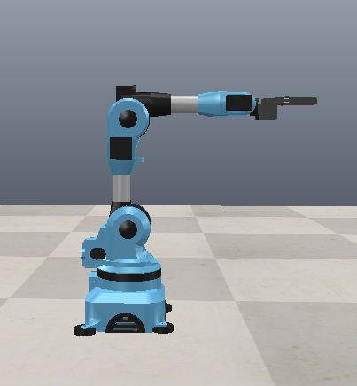
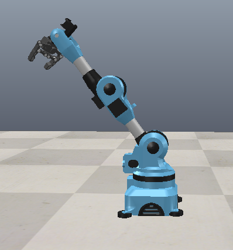
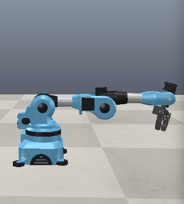
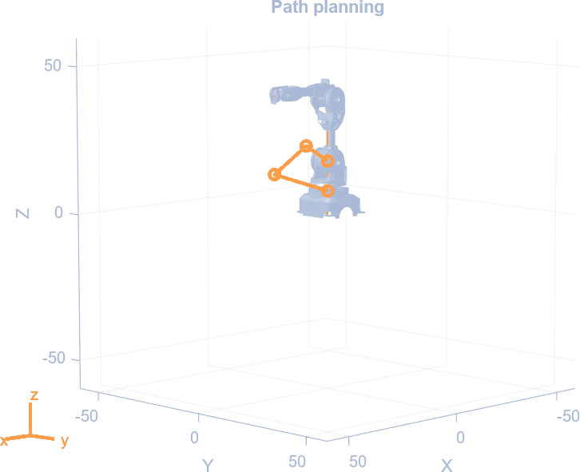

The target
ENVISAT is the largest civil Earth observation satellite ever flown and it has been dead since 2012. Nothing on it works, which means it cannot be told to move.
It launched in March 2002 and ESA lost contact on 8 April 2012. It masses 8,211 kg and spans 26 m with the solar array out, and it sits in a sun-synchronous orbit near 790 km, which is one of the busier bands in low Earth orbit. Left alone it stays there for something like 150 years. A satellite that size cannot dodge, and if it is ever hit the debris goes into the same altitude everything else is using.
So somebody has to go and get it, and whatever goes has to have an arm on it. The question I wanted to answer is a narrow one. Given a fixed point on that body that you want the gripper to be at, and a direction you want to come in from, what does every joint have to do. Everything on this page follows from that.
The arm is sized on the Niryo One, a 500 mm educational robot, not on anything that could hold eight tonnes. That is deliberate. The kinematics do not care about mass: the same six transformation matrices describe a half-metre arm and a fifteen-metre one. Working at a size whose real geometry is published meant I could tell the difference between an answer that was right and an answer that merely converged.
Design of the manipulator
Serial chain. Six revolute joints, one link between each pair, base fixed to the station and a gripper on the far end. Nothing branches, so every joint carries everything outboard of it and the pose of the gripper is a product of six transformations taken in order.
Two decisions do most of the work. The first is putting the last three joint axes through a single point, which makes the wrist spherical. That is not a styling choice. It is what splits the inverse problem into a position half and an orientation half that can each be solved in closed form. Without it you are running a numerical solver at every waypoint and hoping it lands on the branch you wanted.
The second is that every joint has a hard stop, and they are not symmetric.
| No. | Link | Parent | Joint | Type | Travel | Range |
|---|---|---|---|---|---|---|
| 1 | Link 1 | Base | Joint 1 | Revolute | −175° to 175° | 350° |
| 2 | Link 2 | Link 1 | Joint 2 | Revolute | −90° to 36.7° | 126.7° |
| 3 | Link 3 | Link 2 | Joint 3 | Revolute | −80° to 90° | 170° |
| 4 | Link 4 | Link 3 | Joint 4 | Revolute | −174° to 175° | 349° |
| 5 | Link 5 | Link 4 | Joint 5 | Revolute | −100° to 110° | 210° |
| 6 | End effector | Link 5 | Joint 6 | Revolute | −147.5° to 147.5° | 295° |
Joint 2 is the shoulder and it is the tightest thing on the arm. It has 126.7° of travel against 350° for the base, and only 36.7° of it is forward of vertical. That single number shapes the reachable workspace more than any link length does. Every capture point on this page had to be walked back until the shoulder cleared it, and the one the arm actually goes to sits under four degrees off the stop.
Forward kinematics
Six angles in, one pose out. This is the easy direction, and it is also the thing everything else gets checked against.
The Denavit-Hartenberg convention describes the relationship between two consecutive links with four numbers, and only four, which is the whole reason it is worth using:
- ai · length of the link along the common normal
- αi · twist from the old z axis to the new one about that normal
- di · offset along the previous z axis to the common normal
- θi · joint angle about the previous z axis, from the old x axis to the new one
Each set of four builds one transformation matrix:
Multiply the six of them in order and you have the gripper in the base frame:
These are the parameters this arm runs on. Three of them are zero, which is what a well-chosen frame assignment buys you.
| i | ai (m) | αi | di (m) | θi offset | |
|---|---|---|---|---|---|
| 1 | 0 | −90° | 0.103 | 0 | base to shoulder |
| 2 | 0.210 | 0 | 0 | −90° | upper arm |
| 3 | 0.0415 | −90° | 0 | 0 | elbow offset |
| 4 | 0 | 90° | 0.180 | 0 | forearm to wrist centre |
| 5 | 0 | −90° | 0 | 0 | wrist |
| 6 | 0 | 0 | 0.0237 | 0 | wrist centre to tool tip |
Rows 4, 5 and 6 all carry ai = 0, which is the spherical wrist written down. The three axes cross at the origin of frame 4 and nowhere else, and the only thing between that point and the tool tip is a 23.7 mm offset along the tool’s own z axis. Section 04 spends that fact.


Inverse kinematics
The direction you actually need. You know where the gripper has to be. You do not know what any joint should read.
The spherical wrist splits this in two. Where the gripper ends up is decided almost entirely by the first three joints, and which way it points is decided by the last three, so the two halves can be solved one after the other instead of all at once.
Inverse position problem
Back the tool tip off along its own z axis by the 23.7 mm from the table and you are at the wrist centre, which is the only point on the arm the last three joints cannot move:
Joint 1 follows straight from where that point sits in plan view. The other two are a planar two-link problem in the vertical plane joint 1 just swept out, with the shoulder at one end and the wrist centre at the other.
The catch is that the forearm is not a straight link. There is a 41.5 mm offset at the elbow and then 180 mm out to the wrist centre, so the effective link is 184.7 mm long and sits 12.98° off the line you would draw by eye. Ignore that and every solution comes back a couple of centimetres short in a way that looks like a rounding problem and is not.
Inverse orientation problem
With the first three angles known, the rotation they produce is known, so strip it off the target and whatever is left is the wrist’s job:
I take R30 out of the forward pass rather than deriving it separately. Two derivations of the same rotation is two things that can disagree, and when they do, the error shows up as a pose that is a few degrees off with nothing obviously wrong anywhere.
Eight answers, one of them useful
Every reachable pose has eight solutions. Elbow up or down, shoulder reaching forward or leaning back over the base, and the wrist folded either way. All eight put the gripper in exactly the same place. They are not interchangeable.
So the solver returns all eight and ranks them. Joint limits first, because a branch that breaks a stop is not a solution. Then distance from the previous waypoint, which is the part that matters more than it looks. Two waypoints 40 mm apart can easily be solved on different branches, and interpolating between them swings the arm through half its workspace and back. On paper that is a smooth path. In the simulator the elbow goes through the payload.
Checking it is straightforward once the forward direction is trusted. Pick 3,000 random configurations inside the joint limits, run forward kinematics to get a pose, hand that pose to the solver, and see whether it gives the angles back. Worst position error across the run was 4×10−13 m, which is double precision rather than mathematics.

Path planning
A capture is not one pose. It is a sequence, and the arm has to be somewhere sensible at every instant in between.
Waypoints are given as homogeneous transforms, a rotation and a translation packed together, so each one says both where the gripper goes and which way it faces:
Each waypoint goes through the inverse solver once. After that the arm is described by six numbers per waypoint and the path is interpolated between them:
That choice is the point of the section. Joint limits are a box: six independent intervals. A straight line between two points inside a box stays inside the box, so if both waypoints are legal then everything between them is legal, for free, with nothing to check. Interpolating the tip along a straight line in space gives you no such guarantee, and you end up testing the limits at every sample and backing off when one trips.
What it costs is that the tip does not travel in a straight line. It bows. That is why standoff, approach and capture are three separate waypoints strung along one axis instead of one waypoint and a long move: over the last 40 mm the bow is small enough to ignore, and the gripper comes in down the line it is supposed to rather than crabbing sideways across the fixture.
| Waypoint | J1 | J2 | J3 | J4 | J5 | J6 |
|---|---|---|---|---|---|---|
| Stowed | 0.0 | −56.0 | 66.0 | 0.0 | −16.0 | 0.0 |
| Standoff | −26.2 | 6.9 | 13.9 | 0.5 | 25.5 | −0.7 |
| Approach | −26.1 | 23.0 | 9.1 | 0.8 | 14.2 | −0.9 |
| Capture | −26.1 | 32.9 | 3.1 | 1.0 | 10.3 | −1.1 |
| Lift | −26.2 | 2.7 | 13.9 | 0.5 | 29.7 | −0.7 |
| Berth | 78.0 | 19.3 | −21.8 | 0.4 | 61.8 | −0.8 |
Degrees. Joint 2 at capture is the number to watch: 32.9° against a 36.7° stop. Joint 1 barely moves across the three approach waypoints, because the whole approach runs along one line and the base does not need to turn to follow it. It then does 104° on its own during the carry.

What this does not do
Everything above is kinematics. There are no masses in it anywhere.
That is the honest limit of the work. The arm knows where its joints have to be and nothing about what it costs to put them there. No inertias, no joint torques, no reaction back into the station, no contact model at the gripper. For a 500 mm arm on a bench that is a reasonable thing to leave out. For eight tonnes of tumbling satellite it is the part that decides whether the capture works, because the moment the gripper closes, the arm and the debris become one body and whatever angular momentum ENVISAT had is now the station’s problem.
Two smaller things. Straight-line interpolation in joint space means every joint runs at a constant rate and then reverses direction instantly at each waypoint, which no real actuator will do. A trapezoidal or S-curve velocity profile over the same joint path fixes that without changing anything above it. And nothing here checks the arm against itself or against the payload. The branch-continuity rule in section 04 avoids the obvious collisions by keeping consecutive waypoints on the same solution family, but that is avoiding the problem rather than solving it.
The original MATLAB and the CoppeliaSim scene are gone. The parameters in section 03 came back out of the manufacturer’s published geometry, and the kinematics on this page were rewritten from scratch and checked against themselves, which is why there is a round-trip residual quoted in section 04 rather than a screenshot. The figures are from the original simulation.